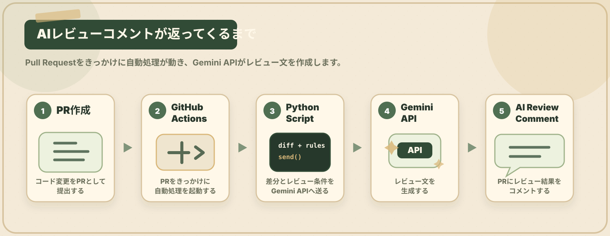

全体像を理解する
PRからAIレビューコメントまで、どの役割がどこで動くのかを確認します。

用語Tips
このページで出てきた言葉を、先にざっくり確認しておきましょう。
TIP 01
PRとは
Pull Request の略です。自分の変更を取り込んでもらうために、チームへレビュー依頼する仕組みです。
TIP 02
GitHub Actionsとは
GitHub上で自動処理を動かす仕組みです。PR作成やpushをきっかけに、ビルド・テスト・AIレビューなどを実行できます。
TIP 03
Gemini APIとは
Geminiをプログラムから利用するための入口です。今回はコード差分とレビュー条件を送り、レビュー文を生成してもらいます。